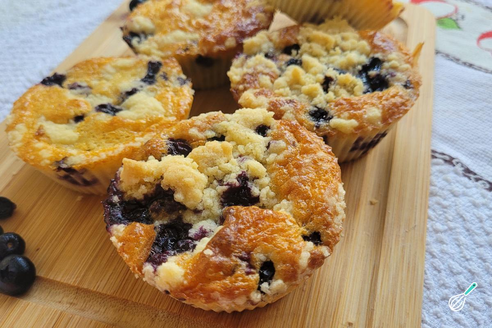

Doces · Outros doces
Muffins com passas

Ingredientes
- Manteiga para untar
- 1 xícara de farinha de trigo
- 1 xícara de farinha integral
- 1 colher (sopa) de açúcar
- 1/2 colher (chá) de sal
- 3 colheres (chá) de fermento em pó
- 1 ovo
- 1/4 xícara de óleo
- 1 xícara de leite
- 1/2 xícara de passas brancas embebidas em água morna e escorridas
Modo de preparo
- Pré-aqueça o forno a 180 °C. Unte 12 forminhas de muffin.
- Peneire farinhas, açúcar, sal e fermento.
- Misture ovo, óleo e leite; junte à farinha com as passas, só até umedecer (massa irregular).
- Encha 2/3 das forminhas; asse ~25 min. Esfrie e congele.
Observação
Rendimento: 12 muffins. Forminhas de empada de 7 cm também servem.